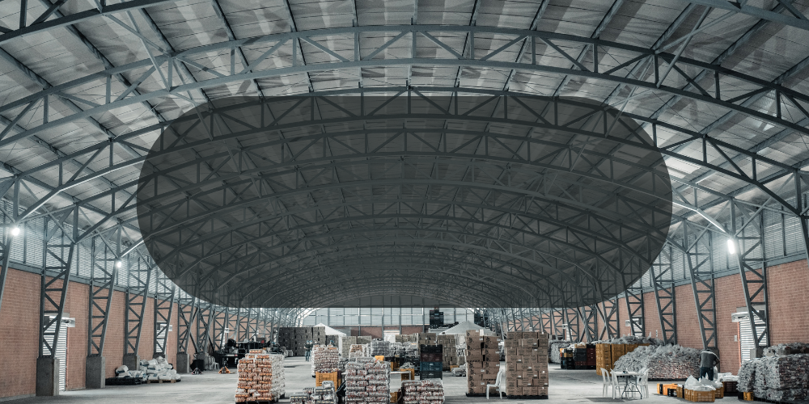

About Us
We are proud to introduce ourselves as an ISO 9001:2015 certified company specializing in the manufacture and supply of engineering machinery parts. Our products are made precisely according to our clients' requirements, including detailed drawings. Equipped with all the necessary manufacturing facilities, we are fully capable of meeting your needs for precise fabrication and machining work.
Founded in 1984, our company has an excellent in-house setup, making us experts in all types of engineering fabrication and machining projects. We can fabricate a variety of materials, from carbon steel to corrosion-resistant steel and aluminum, using GMAW , GTAW and SMAW processes. We follow approved WPS, and our welders are third-party qualified as per ASME and EN standards. Our machine shop can handle operations like planning and turning for medium to heavy-sized components.
Additionally, we offer professional painting services with corrosion-resistant coatings, following our customers' painting procedures. We also export our manufactured products worldwide.
This desire to go that extra yard in the pursuit of excellence has helped us achieve a high degree of expertise in fabricating engineering machine parts and handling both light and heavy machining jobs. Over the years, we have fabricated parts and assemblies for the following industries according to their designs and requirements:
Keeping this in mind, we constantly strive to sustain our performance and explore new avenues of development through diversification and specialization. We aim to stay at the forefront of technological advances, making them the pillars of our growth. Our goal is to raise our standards to new heights and make you our valued partner.